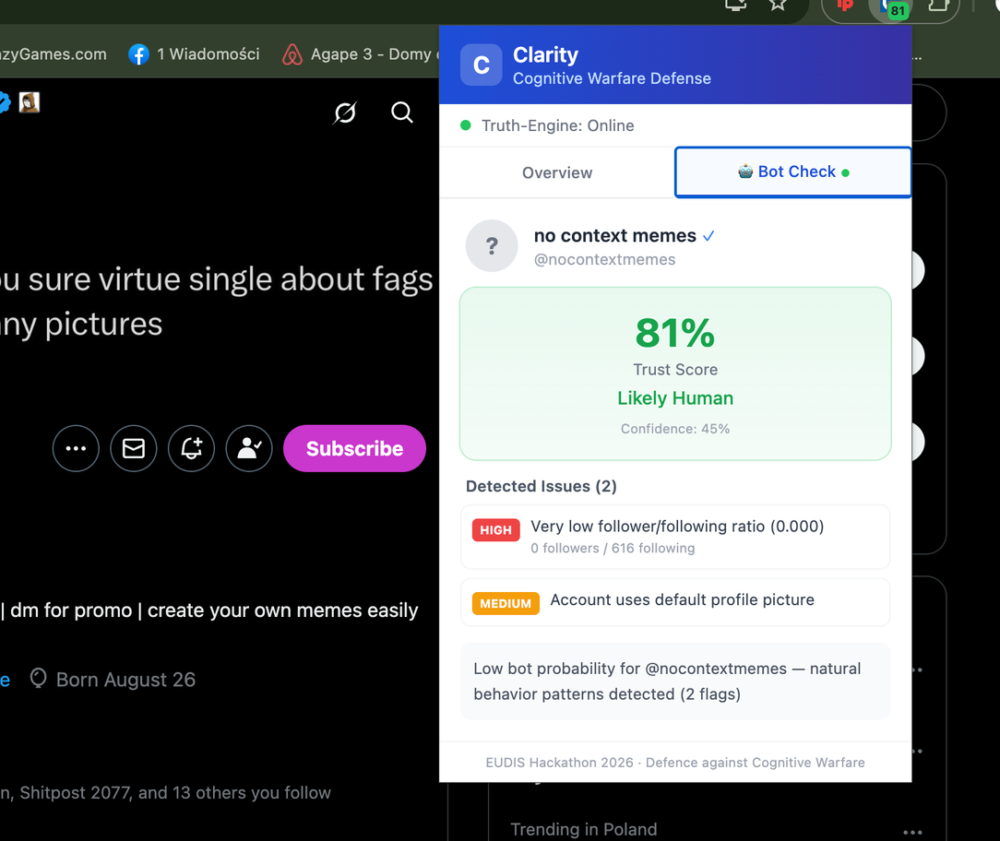
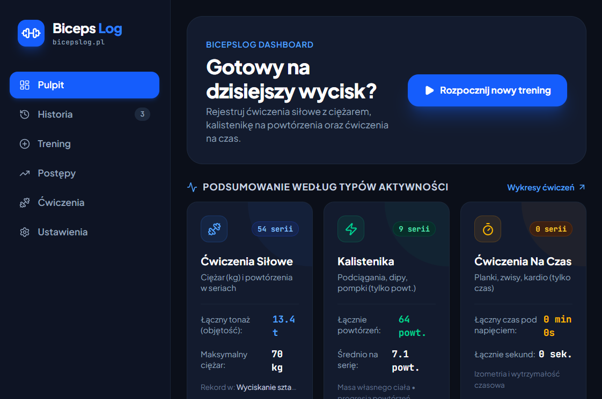
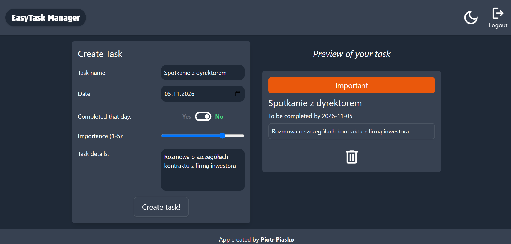
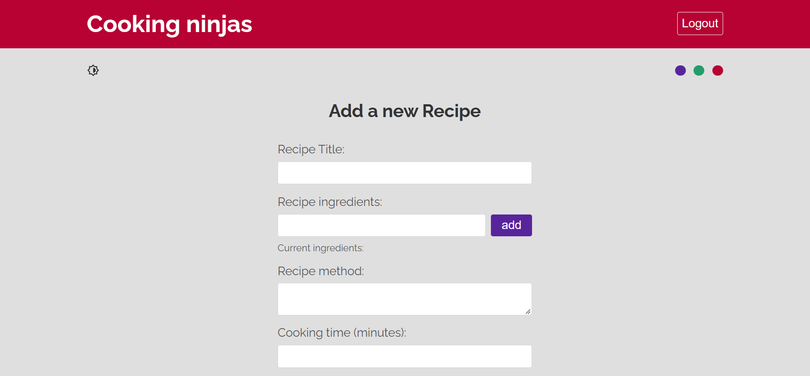

Wybrane projekty
Zbiór aplikacji webowych, narzędzi przeglądarkowych oraz projektów hackathonowych. Kliknij przycisk szczegółów przy dowolnym projekcie, aby zobaczyć architekturę i główne funkcjonalności.

Clarity - Obrona przed wojną kognitywną
Rozszerzenie do przeglądarki oraz działający w czasie rzeczywistym silnik backendowy, które identyfikują taktyki wojny kognitywnej, zautomatyzowane boty i dezinformację w sieci.
- Weryfikacja źródeł (Truth-Scoring): Krzyżowe porównywanie przeglądanych treści ze zweryfikowanymi globalnymi bazami danych w celu błyskawicznej oceny wiarygodności.
- Wykrywanie manipulacji: Identyfikacja wzorców językowych typowych dla polaryzacji, farm botów oraz skoordynowanych kampanii dezinformacyjnych.
- Niskie obciążenie systemu: Lekka architektura klient-serwer zaprojektowana tak, aby analizować strony w tle bez spowalniania pracy przeglądarki.
Aplikacja do śledzenia treningów
Autorski system pozwalający na zapisywanie postępów w treningu siłowym i kalistenice, dostosowany do potrzeb użytkowników, którzy chcą zwiększać swoje możliwości fizyczne. Umożliwia monitorowanie objętości treningowej oraz analizę wyników w czasie rzeczywistym. Projekt został postawiony na domenie bicepslog.pl.
- Śledzenie treningów: Zapisywanie ćwiczeń, serii, powtórzeń oraz używanych ciężarów, aby precyzyjnie monitorować postępy.
- Analiza progresu: Podgląd historii treningów i objętości treningowej, ułatwiający ocenę wyników w czasie.
- Planowanie rozwoju: Wsparcie w organizacji treningów siłowych i kalistenicznych oraz systematycznym zwiększaniu swoich możliwości.


AdvancedTodoApp
Zaawansowana aplikacja internetowa do zarządzania zadaniami i czasem, zintegrowana z chmurową bazą danych oraz systemem autoryzacji użytkowników.
- Autoryzacja i chmura: Bezpieczne logowanie i rejestracja użytkowników oraz zapisywanie zadań w bazie danych Firebase.
- Pełny cykl CRUD: Szybkie dodawanie, edytowanie w miejscu, oznaczanie wykonania oraz usuwanie zadań.
- Priorytety i kontrola czasu: Możliwość przypisywania poziomów ważności (niski, średni, krytyczny) oraz określania ram czasowych na wykonanie zadania.
SkyCast - Aplikacja Pogodowa
Responsywna aplikacja meteorologiczna pobierająca dane lokalizacyjne oraz aktualne parametry pogodowe z zewnętrznego interfejsu API w czasie rzeczywistym.
- Komunikacja z REST API: Asynchroniczne pobieranie i parsowanie danych meteorologicznych oraz geolokalizacyjnych.
- Dynamiczny interfejs React: Interaktywne karty prezentujące temperaturę odczuwalną, wilgotność, ciśnienie oraz prędkość wiatru.
- Mobile-First Design: Układ automatycznie dostosowujący kafelki pogodowe do ekranów smartfonów i monitorów.
Cooking-Ninja
Interaktywna aplikacja webowa dla pasjonatów gotowania, umożliwiająca tworzenie własnych przepisów kulinarnych, katalogowanie ich oraz współdzielenie z innymi w bazie danych.
- Kreator przepisów: Wielopolowy formularz pozwalający dynamicznie dodawać listę składników, czas przygotowania oraz szczegółową instrukcję.
- Synchronizacja z Firebase: Natychmiastowy zapis nowych potraw w chmurowej bazie danych i aktualizowanie listy przepisów bez przeładowania strony.
- Wyszukiwanie i podgląd: Przejrzysty podział na karty dań z szybkim dostępem do pełnego widoku wybranego przepisu.
